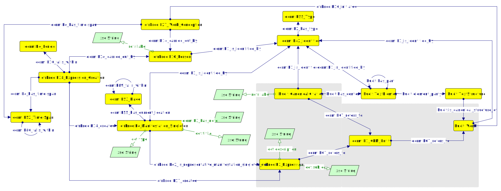
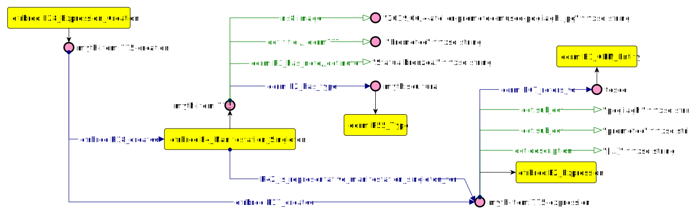
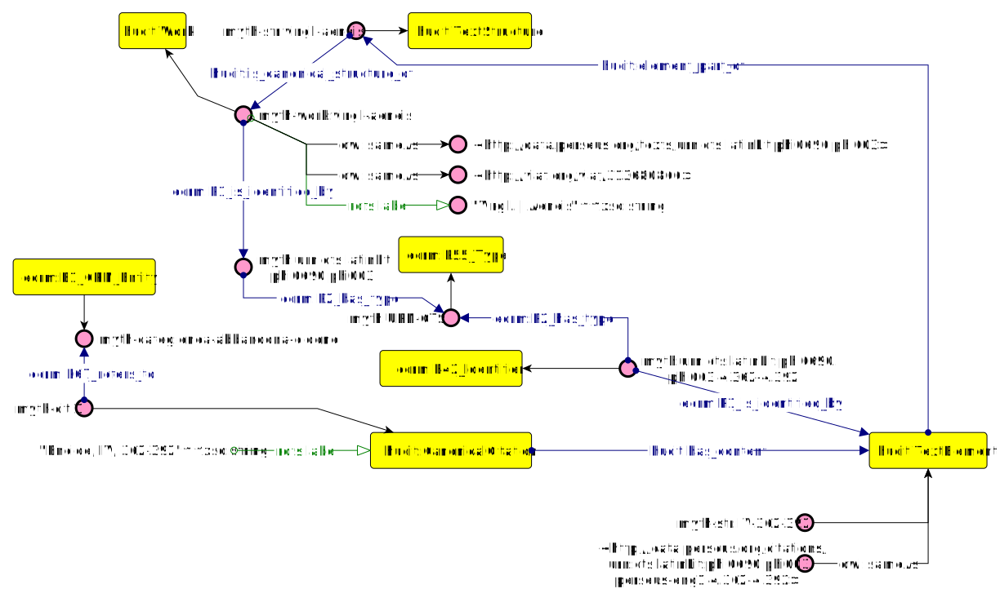
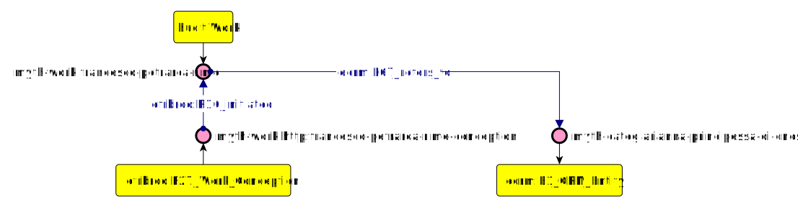
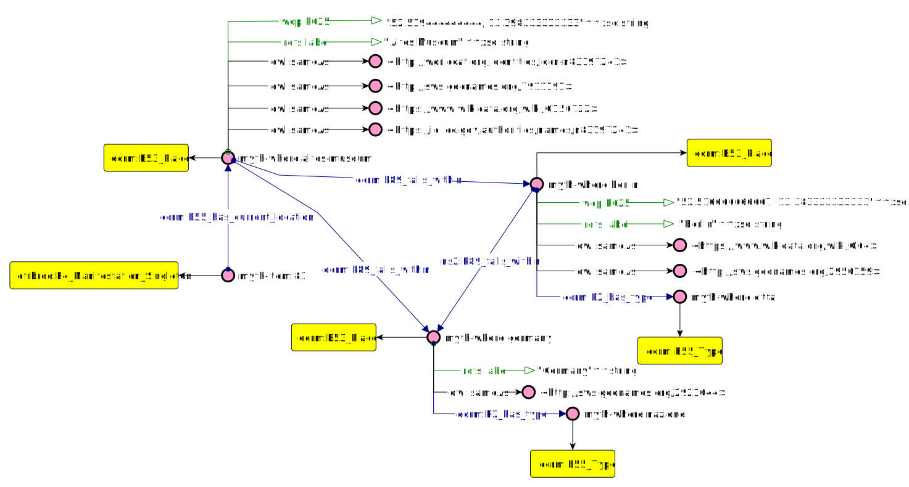
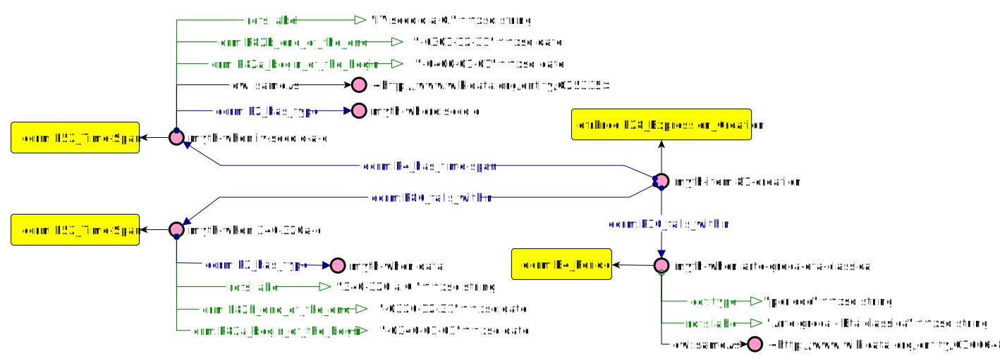
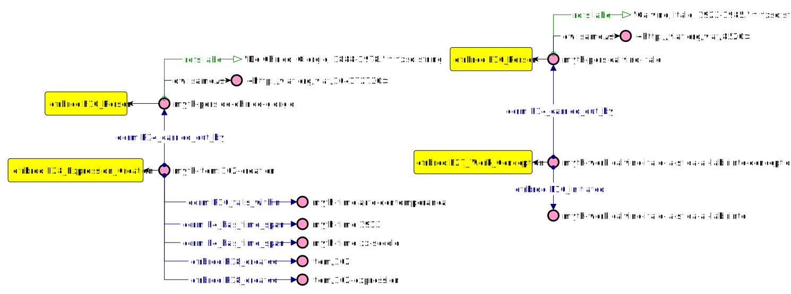
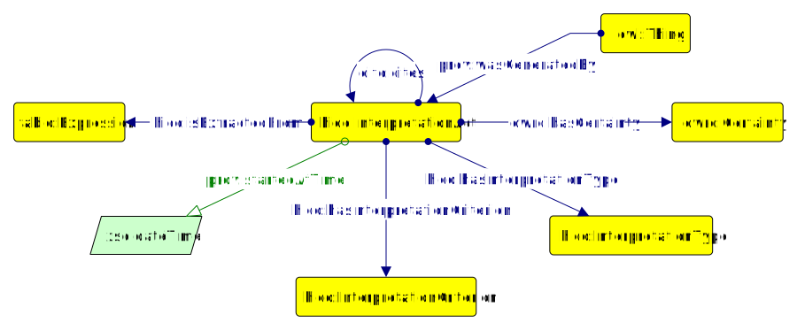
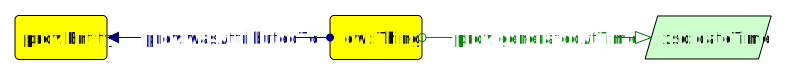

In this section is briefly presented how MIMA (Documentation) has been reused and integrated to satisfy Mythologiae dataset representational requirements and peculiarities. In the following sections is presented a brief overview of the 4 layered approach used to store and enhance Mythologiae data. For more information about this approach, please see "Daquino, M., Pasqual, V., Tomasi, F. “Knowledge Representation of digital Hermeneutics of archival and literary Sources”.
The so called "layered approach" cosists in reusing Nanopublication structure to encode sets of information descibing each cultural object in Mythologiae collection. Nanopublication datamodel, as shown in the figure below is organised in 3 interconnected graphs: the assertion, provenance and publication information graphs. A fourth layer (layer 0 or factual data graph) has been added to cover the entire domain. Specifically, each layer (graph) stores a particular type of metadata.
Approach to datamodelling activity:
This process has been performed sequentially and on each module and submodule.
The figure below represents layers 0 (factual data) and 1 (assertions) of the datamodel. All class and properties in the gray zone represent the assertion graph (layer 1) and all the other class and properties in white background represent factual data (layer 0). In particular, in level 0 are stored information about cultural objects and works descriptive metadata. In level 1 are stored the connections betweeen cultural objects representation (e.g. depicted scenes, conceptual value of the item), categories to which the cultural object is referred (e.g. the scene or theme depicted in the item), works and citations. For example, for what concerns the following scenario "The cultural object X represents the category Y, which is mentioned in the citation Z and the work W", descriptive metadata about works and cultural object can be stored in factual data graph (level 1), while the association between X, Y and Z is stored in assertion A.

For the sake of simplicity, Mythologiae Datamodel has been tested in modules. Those modules are named 'What', 'Where', 'When', 'Where' - the four dimensions created by the reuse of an event-centric backbone ontology (FRBRoo). It is worth to underline that this research main interest is to investigate the 'What' dimension, taking into consideration how it interacts with the other three modules. In particular, the 'What' dimension represents how citations mentioning works and items are linked together through the use of conceptual categories. 'When', 'Where' and 'Who' can be seen as three modules of addition information aiming to investigate in toto the 'What' dimension.
Items have been modelled with FRBRoo and dcterms.
Example: The figure below expresses the the item 775 and its metadata, along with its conceptual aspect which represents Teseus.

URIs identifying items (efrbroo:F4_Manifestation_Singleton) are are incrementally numbered.
Citations (Canonical Citations) has been modelled through the use of hucit.
Example in natural language: "The passage "Eneide, IV, 362-392" refers to the abandon of Dido By Eneas".
URIs identifying citations (hucit:Citation) are incrementally numbered. URIs identifying textual elements of the canonical work (hucit:TextElement) follow the structure "book number, line-line". URIs identifying works (hucit:Work) follows the strucuture "author name, work name" reconciled against viaf when possible.
Works have been modelled with FRBRoo. Example in natural language: "In "Rime" by Francesco Petrarca is take up the figure oF Arianna, princess of Cnosso" 
URIs identifying works (hucit:Work) follows the strucuture "author name, work name" reconciled against viaf when possible.
Reconliciation against VIAF, why is this so important?
Considering the messy data input, most of the cited works has been slightly differently recorded as strings in the input csv (e.g. Boccaccio Giovanni --> "Della Genealogia degli dei" oppure "Genalogie Deorum Gentilium Libri" oppure "Genalogie Deorum Gentilium" oppure "Genalogie Deorum"). VIAF reconciliation guarantees to reconduct all this different forms of the same work to a single controlled label (e.g. "Boccaccio, Giovanni, 1313-1375. | Genealogia deorum") and identifier (e.g. 182235138). The controlled label has been reused to create the rdf-dataset internal corresponding URIs (e.g. myth-work:boccaccio-giovanni-genealogie-deorum).
Conceptial categories (or simply categories) are the connection between each cultural object representation and the citation or works they refer to. In Mythologiae data, a 2 layers taxonomy has been populated. For example the category "Enea fugge da Troia" refers to the supercategory "Enea".
Example in natural language: "Item 81 is currently stored in Altes Museum (Berlin, Germany)".

Example in natural language: "Item 81 has been created between 320 and 340 b.C. (IV century b.C.) and belongs to the Classical era - Greek art". 
Example in natural language: "Item 102 has been created by Giogio de Chirico (1913 - contemporary art piece)" and "La sfida al labiritinto, literary source by Italo Calvino"
Starting from the abovementioned scenario "The cultural object X represents the category Y, which is mentioned in the citation Z and the work W", which has been said, it is stored into the graph assertion A, we use provenance graph to define the contextual information about A. Assuming that each assertion is generated by an interpretation, in provenance graph we define who performed the interpretation, when, with which criterion and its type. The following figures describes classes and properties reused in provenance graph. Such elements are mostly reused by HiCo and PROV.

Finally, in publication information graph are stored the information about the publication of each nanopublication. Information in this layer answers the questions such as: Who is responsible for the machine-readable version of the statement? When was it extracted? It represents the meta-context of a statement that has been automatically or semi-automatically generated.
